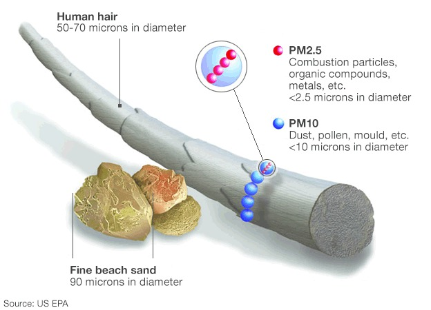

Dirty Air in Washington
The air quality in Washington is falling rapidly. We need a plan to reduce the pollutants in the air.
When you think about air, you most likely imagine either a picturesque pocket of nature with a beautiful view and a light breeze, or maybe bottled air from The Lorax. But the air in Washington is being polluted at a rapid rate. The main way pollution is measured is using a measurement called AQI, or Air Quality Index. AQI can be based on a few different things, including ground-level ozone, carbon monoxide, sulfur dioxide, nitrogen dioxide, and particulate matter, which is what is focused on here. Particulate matter, or PM, has two major types, PM2.5 and PM10. These are named based on the size of these particals in micrometers, or microns. For reference, a micrometer is one thousandth of a millimeter. As you can see on the right, hair and sand, two of the smallest things that can be seen with the naked eye, are still five to ten times thicker than PM10, and 20 to 40 times thicker than PM2.5.
| Area | AQI Avg | AQI Risk | PM2.5 2018 | PM2.5 2023 | PM2.5 Avg | Particles |
|---|---|---|---|---|---|---|
| Seattle | 23.7 | Little Risk | 8.3 | 9.3 | 7.93 | Moderate |
| Spokane | 55.1 | Some Risk | 10.6 | 12.1 | 10.73 | Unhealthy |
| Tacoma | 29.4 | Little Risk | 7.9 | 9.7 | 8.03 | Moderate |
| Vancouver | 40.6 | Little Risk | 8.2 | 10.4 | 9.83 | Moderate |
| Bellevue | 30.2 | Little Risk | 5.5 | 8.7 | 6.46 | Moderate |
| Kent | 31.6 | Little Risk | 7.3 | 11.3 | 8.3 | Moderate |
| Everett | 24.9 | Little Risk | 7.9 | 9.6 | 7.9 | Moderate |
| Spokane Valley | 34.3 | Little Risk | 9.7 | 11.7 | 10.9 | Unhealthy |
| Renton | 31.8 | Little Risk | 6.8 | 9.6 | 6.8 | Moderate |
| Federal Way | 35.5 | Little Risk | 8.3 | 9.7 | 8.3 | Moderate |